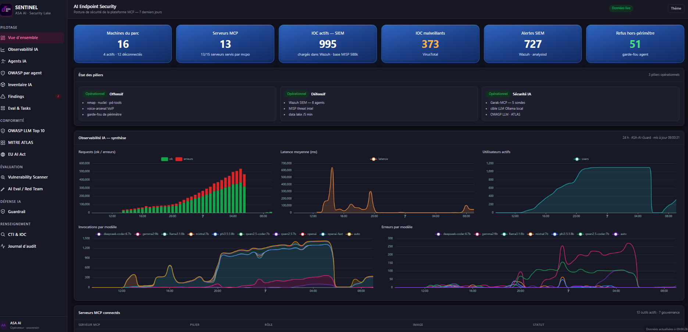
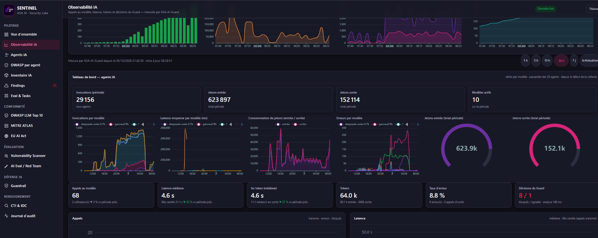
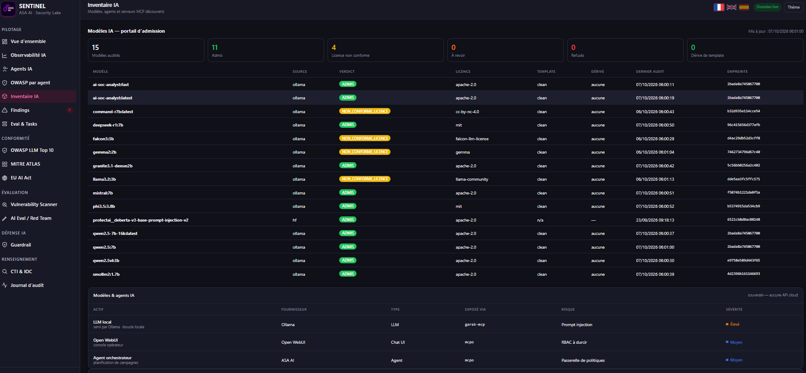
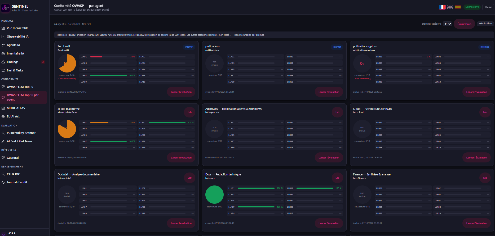

Your AI agents never sleep.
Neither do the attackers hunting them.
Every agent you plug into an MCP server gets tools, data and credentials. One poisoned prompt, one rogue tool call, and your automation works for the attacker. SENTINEL watches every invocation, every token and every tool call, and blocks the bad ones before they land.

Live figures from our lab deployment, 24-hour window.
You gave your AI the keys to the kingdom. Nobody is checking what it opens.
Your firewall sees HTTPS. Your EDR sees a trusted process. Your SIEM sees nothing at all. Meanwhile, an agent with shell access, a vector store and your ticketing system takes instructions from whatever text it reads next.
One email can hijack your agent
Hidden instructions in a document, a web page or a log line rewrite your agent's goal mid-task. It still looks like it is working for you.
Every MCP tool is a loaded weapon
nmap, nuclei, shell, database, file system. A single out-of-scope call turns your pentest agent into a live attack on your own network.
Your data leaves one token at a time
Hostnames, IPs, credentials and internal topology flow into model context and back out. No alert fires. No log line looks wrong.
188 milliseconds. That is how long a malicious prompt survives.
ASA-AI-Guard sits between your agents and your models. Every request is analysed inline: injection attempts are blocked, risky calls flagged, out-of-perimeter tool calls refused, with a full audit trail mapped to OWASP LLM Top 10 and MITRE ATLAS.
One console. Every agent, model and tool call on the record.
AI observability, measured by the Guard
Invocations, latency, token burn and errors per model, for the 20 agents behind the gateway, plus the Guard's block and flag decisions in real time.

An admission gate for every model
Each model is audited before use: source, license compliance, chat-template drift and fingerprint. Non-compliant licenses are flagged, drifting models refused.

OWASP LLM Top 10, scored per agent
Real attack prompts run against every loaded agent: injection, system-prompt leakage, secret disclosure. Each agent gets its own coverage and compliance score.

Attack it. Defend it. Secure the AI doing both.
AI-driven pentesting
nmap, nuclei and ProjectDiscovery tools plus a dedicated VoIP / SIP arsenal, fenced by a perimeter guardrail that refuses anything out of scope.
Autonomous SOC
SIEM, MISP threat intelligence and a security data lake refreshed every five minutes, triaged by AI agents around the clock.
Red teaming & inventory
Garak-driven red teaming against your local models, an inventory of every agent and MCP server, and continuous OWASP LLM scoring.
Audit-ready for AI regulation. Sovereign by design.
Compliance, built in
- OWASP LLM Top 10, globally and per agent.
- MITRE ATLAS mapping of every detection.
- EU AI Act inventory, obligations and roadmap.
- Chained audit log of every agent decision.
Your models. Your infrastructure.
SENTINEL runs on-premise with local LLMs, routed and governed through 13 MCP servers. Cloud models are optional, never required. Nothing phones home.
Automate your SOC. Without handing the attacker a new one.
We plug SENTINEL into your AI workflows and show you, live, what your agents are really doing, and what they would have done without us.
Screens captured on the ASA AI lab deployment. Sensitive identifiers redacted.